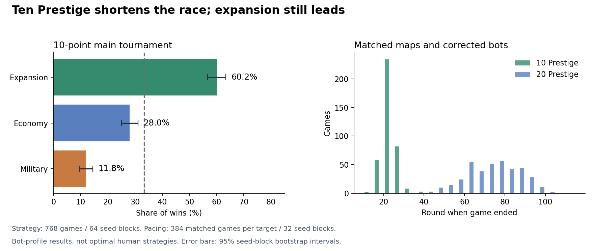
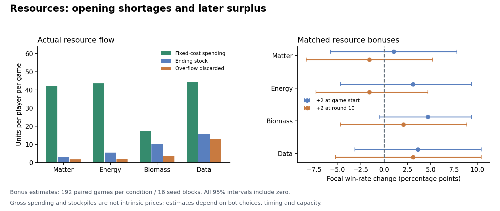

Local experiment 17.22 · Implementation be527a90200ee474d96bc951235088152f65f24b
Assessment: lowering victory to 10 Prestige makes the race much shorter, while expansion remains the strongest existing browser bot profile. Resource usefulness changes with timing: Data is the main opening shortage but is overproduced later; Biomass often accumulates. The matched resource bonuses do not produce a statistically clear overall value ranking.
The local game now ends at 10 Prestige after round cleanup. It includes the tested inward first Shipyard, home-relative AI search ordering, affordable-build fallback after a usable Shipyard, and legal-move guards. Resource costs, production and scoring sources are unchanged. Previous 16.21 games and policies remain archived. This experiment is prepared locally; it has not been published to Render.
Mixed games rotate each of three possible duplicated profiles through all four seats. Each profile appears in 1,024 player-seats in the main 10-point batch. Equal-strength references are 33.3% of wins per profile and 25% wins per individual appearance. Confidence intervals resample whole map-seed blocks. These profiles are existing heuristics, not optimal human strategies.
| Bot profile | Wins /768 | Share of wins | 95% interval | Mean colonies | Mean relics | Mean Shipyards |
|---|---|---|---|---|---|---|
| Expansion | 462 | 60.2% | 56.6–63.4% | 3.11 | 2.78 | 0.98 |
| Economy | 215 | 28.0% | 25.0–31.1% | 2.09 | 2.93 | 0.90 |
| Military | 91 | 11.8% | 9.5–14.5% | 1.10 | 2.97 | 3.11 |
The expansion bot averages 3.11 Colonies, compared with 1.10 for military. All three recover roughly three relics per player. Military's poor result therefore includes its difficulty turning ships into conquest/Colony score; it is not a clean test of optimal military play or Fleet combat strength.

Median mixed-game length falls from72.5 rounds at 20 points to22 at 10. The 10th–90th percentile range at 10 is 18–27 rounds. Identical-profile 10-point games have a median of 23 rounds. Automated rounds cannot be converted directly into human session minutes.
On the 384 matched mixed games, military's share of wins changes by -9.9 percentage points (95% interval -14.6 to -5.5); economy changes by +10.2, and expansion by -0.3. Thus the shorter target shifts victories from this military profile to economy while expansion remains dominant.
| Average winning score source | Prestige |
|---|---|
| Colonies + frontier pairs | 4.32 |
| Excavations | 3.99 |
| Purchased cards | 1.75 |
| Shipyard pairs | 0.22 |
Relics contribute about 39% of the average winning score, Colonies/frontier pairs 42%, purchases 17%, and Shipyard pairs 2%. Those are pooled winning-score components, not independent causal values.
Values below are mean units per player per game in the 768 main mixed games. Generated units include production and card gains; fixed spending includes structures, ships, Colonies, excavation, purchases, storage and escape. Flexible spending is starter upgrades and trashing, which accept a chosen resource. Bank/player trades are accounted separately. Shortages count selected Operations costs still unaffordable after the bot's conversions/bank planning.
| Resource | Generated | Fixed spending | Flexible spending | Overflow discarded | Ending stock | Unfunded order checks |
|---|---|---|---|---|---|---|
| Matter | 63.2 | 42.4 | 15.7 | 1.7 | 2.9 | 0.9 |
| Energy | 64.0 | 43.7 | 9.9 | 1.8 | 5.4 | 0.3 |
| Biomass | 34.9 | 17.4 | 5.5 | 3.6 | 10.1 | 0.6 |
| Data | 85.5 | 44.2 | 11.1 | 12.9 | 15.6 | 3.8 |
Each case adds exactly two units of one resource to the same focal player, compared with the same seed, lineup and seat without the bonus. The gift occurs after production overflow clears and before an ordinary action. All 192 gifts in every condition were applied. Changes in win rate are percentage points:
| Resource | Gift round | Focal win-rate change | 95% paired interval | First-yard round change |
|---|---|---|---|---|
| Matter | 1 | +1.0 | -5.7 to +7.8 | -0.05 |
| Matter | 10 | -1.6 | -8.3 to +5.2 | +0.00 |
| Energy | 1 | +3.1 | -4.7 to +9.4 | -1.30 |
| Energy | 10 | -1.6 | -7.3 to +4.7 | +0.00 |
| Biomass | 1 | +4.7 | -0.5 to +9.4 | -0.26 |
| Biomass | 10 | +2.1 | -4.7 to +8.9 | +0.00 |
| Data | 1 | +3.6 | -3.1 to +10.4 | -1.71 |
| Data | 10 | +3.1 | -5.2 to +10.4 | +0.00 |
Every overall bonus interval includes zero. The current sample cannot reliably rank the four resources by their effect on winning. This is not evidence of equal intrinsic value. Bonuses can change a heuristic bot's choices, and extra stock can be discarded or fail to address its actual bottleneck. Strategy-specific estimates use 64 pairs each and are less precise; for example, starting Data helps the expansion profile's observed win rate but not the military profile's.

Local 10-point game · Canonical local victory rules. The in-app browser verified 17.22, the 10-point header/dialog/manual and 331 hexes. All Node/map/dialog/replay/rules checks,61 Rust tests, formatting, Clippy, Wasm/package checks and full native HTTP smoke passed. Docker was unavailable; no container-image validation is claimed.
The engine's 20-point parity check reproduced 12 prior corrected-policy game outcomes. An observed/unobserved 10-point pilot produced identical results. Resource observers consume no RNG and assert every ledger against final stocks. The source engine hash is recorded in each batch metadata file.
node run.cjs --suite main --seeds 64 --target 10 --workers 4 --output main10.jsonl node run.cjs --suite main --seeds 32 --target 20 --workers 4 --output control20.jsonl node run.cjs --suite gifts --seeds 16 --target 10 --workers 4 --output gifts.jsonl python3 analyze.py python3 report.py
Full statistics and intervals · Resource flow CSV · 10-point games · 20-point controls · Paired resource experiments · Local verification record